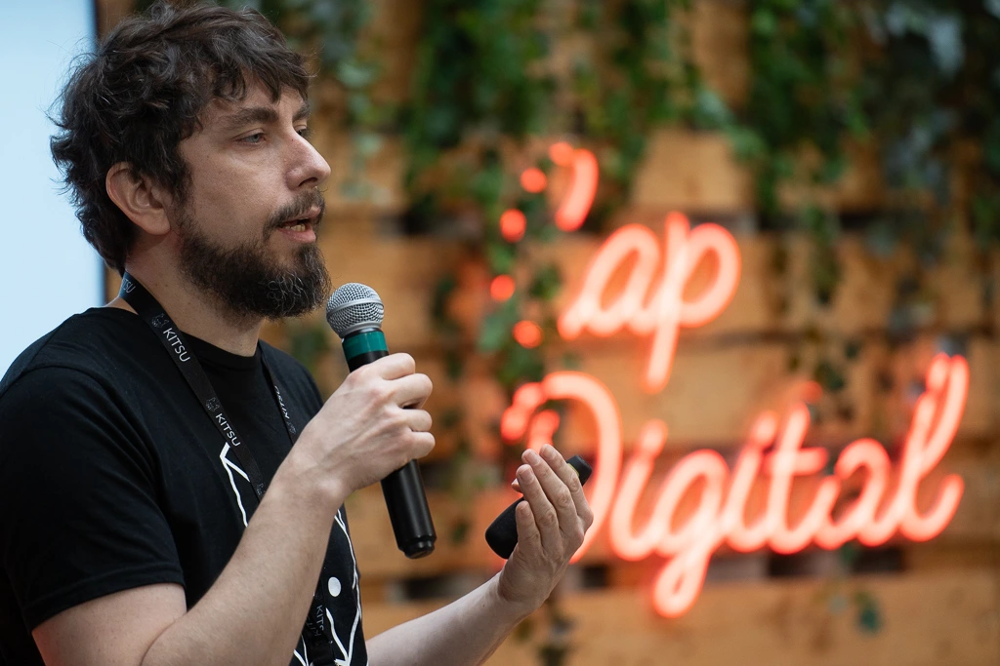
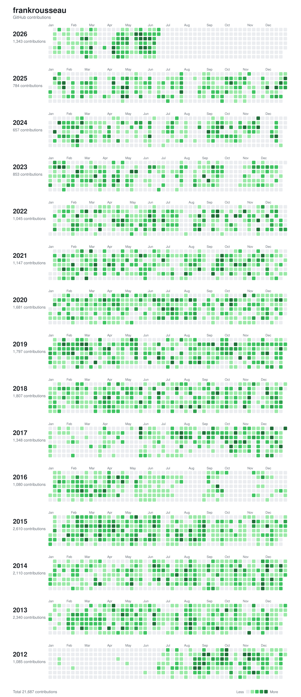
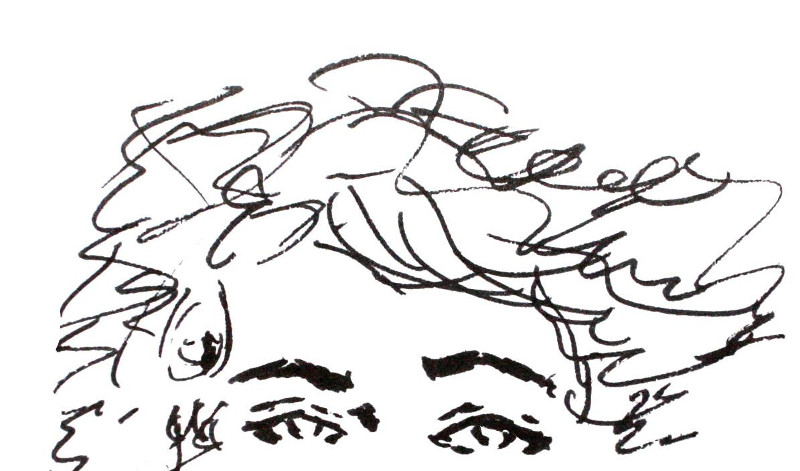

My name is Frank Rousseau, I'm 43 years old and I've been a web addict for more than 25 years. I love using and understanding web applications as much as I enjoy building them. I created my first website in 1997, it was a poetry registry. Since then, I've never stopped. Watching, showing, sharing, learning, doing with people from all over the world, are not things you can give up easily. It's something I want to experience forever.
Career
I'm the creator of Kitsu and the CEO of CGWire, the company behind the project. Kitsu is a project management tool for creative studios that simplifies communication and eases collaboration. By working better together, studios using Kitsu improve their work conditions and the movie quality. Today around 100 studios use our solutions through our services and we counted 300 self-hosted installations.
Prior to this, I co-founded Cozy Cloud as CTO, a startup that built FOSS personal clouds. We were a remote office team of 20 people. I really enjoyed that experience and learned a lot from it. I had to leave the company for sad reasons, but the journey was unique.
Press
Some interviews and articles where I'm mentioned in:
2025Ecran Total
2022Mediakwest
2021Gizmo podcast
2020Indie Makers
2019Visions Under Construction
2017IndieHackers
2015Framablog
2014Venture Beat
2013Wired
Socials
I like to share my thoughts about software development, decentralization and self-hosting on the following medias:
● ● ●
Inspirations
For my working activities, Rework and The Laws of Simplicity are a great source of ideas. With their pragmatic frameworks, they help me to deal with uncertainty and achieve goals.
When it's about building a team or a community I dig into Turn your ship around and the chapter 6 of the ZMQ guide. They give good tips about making people work well together and connect their strengths.
I read a lot about personal development, but finally, when I need confidence and courage I think about Naruto and Luffy (One Piece). They never give up and can see when people have something good inside them. When it's time to be a little bit cynic, glamorous and honest I turn to Canardo. My last discovery is the funny and humble One Punch Man. I like how he stays simple despite his super powers.
But overall, the text that resumes the best my way of living is The Life Manifesto.
Talks
During my previous experiences, I performed talks about Free and Open Source technologies. I had the opportunity to speak at JDLL, RMLL, DotJs, ParisJs, ParisWeb, LyonJS, NodeJS Paris, Human Talks, PyConFr, Tech.Rocks, Annecy MIFA, Quantified Self Europe, FOSDEM, FOSDEM again, and Hy! Berlin. The main subjects I addressed in my talks were software development, UI design basics and agile methodologies.

● ● ●
Open source
I have done most of my Free software contributions on my own projects: Kitsu and Cozy. I wrote a full retrospective 🔗 (fr) about my experience.
Aside of my main projects I did some open source contributions:
- I wrote a Python client for Open Food Facts.
- I helped to build the first version of the Diaspora* API.
- I wrote request-json, a tiny Node.js library to deal easily with REST APIs.

● ● ●
Past projects
- Hacker Events
- Hacker Events was a small website that listed most important upcoming events. An ical feed is available too. It had several contributions but not many people were using it, so I stopped it.
- Cozy
- Cozy makes the personal server as simple to use as a smartphone. It turns a hardware of yours in a personal assistant that collects and connects your data. With it your digital life becomes smoother and your privacy is respected. We had thousands of active users, we raised an overall of $6M, had a team of twenty and attracted hundreds of contributors.
- Konnectors
- Konnectors is an application for Cozy. It allows to fetch and store data from many vendors automatically (Jawbone, Withings, phone providers, etc.). 25 people contributed to the code.
- KYou
- KYou is an application for Cozy. It allows to extract analytics from your personal data. It comes with a comparator tool that helps you find relations between your data.
- Newebe
- Newebe is a distributed social network. Every user host their account. It allows social interaction without compromising your privacy. One day I expect to turn it into a Cozy app.
- Beburlesque
- Beburlesque was a webzine about Burlesque culture. We published monthly interviews, news, picture galleries, events... We made a book from it too. We sold 2000 copies.
- Artforge
- As a full-time employee, I worked on Artforge, a web application suite dedicated to CG studios that aims to improve team collaboration. I built most of the application UIs. Unfortunately, the company closed and the software is discontinued.
- Dolebraï
- Dolebraï was a web radio that broadcasted and promoted open music. There were monthly mixes and a blog about open music news. The website and the radio are no more available.
● ● ●
Artwork below was made by Diana Rovanio
